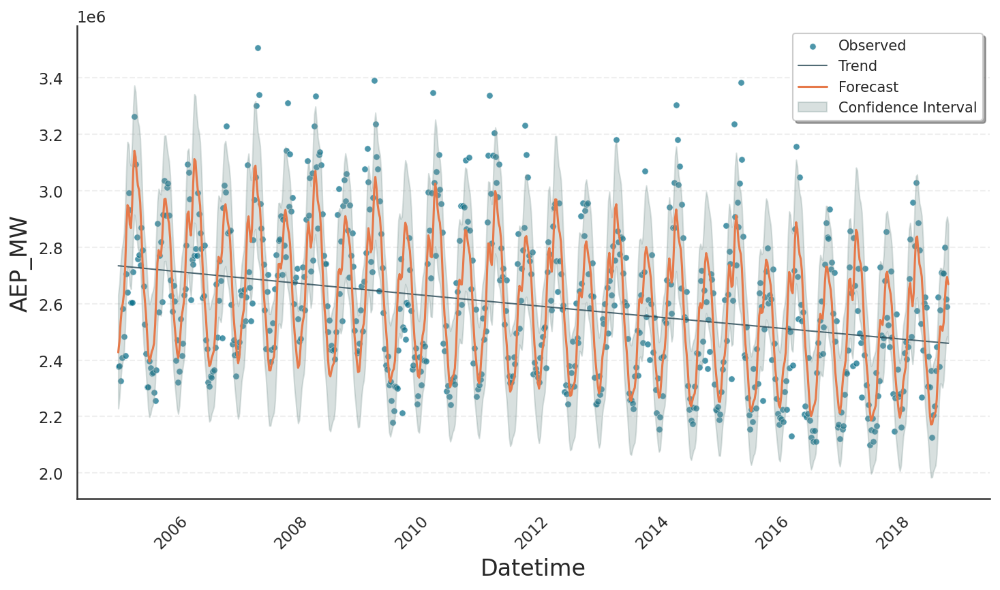

Seasonalities#
The seasonal component of a time-series \(f_\text{seas}(t)\) isolates the portion of the series that periodically repeats. A convenient way to approximate this component is a partial Fourier sum, which is an expansion into a weighted sum of sine and cosine functions according to
Here \(T\) is the fundamental period of the Fourier series, e.g. \(T\) = 7 days for patterns that repeat on a weekly basis. The upper limit \(N\) of the Fourier sum is known as its order, where higher orders are able to describe faster oscillations. Eventually, the parameters \(a_n\) and \(b_n\) are weighting factors that are specific to the seasonal component at hand and will be estimated by Gloria’s fitting procedure.
To illustrate how the Fourier order shapes the seasonal fit, we use the power consumption data already seen in the basic usage tutorial. First, we condense the hourly power consumption data into weekly totals. This aggregation smooths out daily and intra-week fluctuations, leaving only the longer-term signal.
import pandas as pd
# Load the data
data = pd.read_csv("data/AEP_hourly.csv")
# Convert to datetime
data["Datetime"] = pd.to_datetime(data["Datetime"])
# Aggregate hourly data to weekly data
data = data.resample('W', on="Datetime").sum().reset_index().iloc[2:-1]
The resulting series spans more than 14 years, and we model it with just a yearly seasonal component.
from gloria import Gloria
# Set up the Gloria model
m = Gloria(
model="gamma",
metric_name="AEP_MW",
timestamp_name="Datetime",
sampling_period="7 d",
n_changepoints=0,
)
# Add observed seasonalities
m.add_seasonality(
name="yearly",
period="365.25d",
fourier_order=2 # <-- Change Fourier order here
)
# Fit the model to the data
m.fit(data)
# Predict
prediction = m.predict(periods=1)
# Plot the results
m.plot(prediction)
We deliberatly choose fourier_order=2 because the weekly data show two clear demand peaks each year: one in mid-winter and another in mid-summer. As the plot below confirms, an order 2 Fourier series captures this dominant annual pattern faithfully.
{kind=link}
The next plot shows the result when raising the order from 2 to 10, which lets the yearly Fourier series capture fine-grained oscillations such as small mid-season bumps and dips that the lower order smoothed out.
{kind=link}
Warning
Increasing the order even further can be tempting to achieve a better result, but bears the risk of fitting noise rather than signal. Good practice is to validate an increase in the order by excluding overfitting on a test data set.
Configuring Seasonalities#
When considering possible seasonalities and Fourier orders for your model, you can follow these guidelines
Minimum data span: include a seasonal component only if your data cover at least two complete periods. One period for learning the pattern, one more for confirming its stability. For instance, a weekly seasonality requires at least 2 weeks of data.
Maximum Fourier order: the maximum order that can be estimated from data with sampling period \(\Delta t\) is \(\lfloor T / (2 \Delta t) \rfloor\) following the Nyquist theorem. For a weekly seasonality (\(T\) = 7 days) on daily data (\(\Delta t\) = 1 day), the order is capped at 3.
Tip
When using the CalendricData protocol, these rules are automatically applied setting yearly_seasonality, weekly_seasonality etc. to "auto". For more information, see the calendric data tutorial.